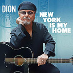

Second Chance Selection (January - June 2016)
Once you reach the half part of the year, you'll stumble onto many a publication revealing their favorite albums of the year. Though we do wholeheartedly appreciate the arbitrary art of listmaking, we also think there's no reason to rush out some collective consensus since the entire No Ripcord staff is still processing these very, very busy months in terms of album releases.
So instead, we've decided to continue our yearly tradition of highlighting a number of albums we believe all of you should consider for your ears. These are not necessarily considered "overlooked", though we do encourage our writers to shed some light on albums they've been personally enjoying that will most probably fail to make our year-end lists. Nevertheless, this is also a good opportunity to also remind ourselves of some that we did unfortunately miss the first time around that will, in fact, get due acclaim.
We present to you our annual Second Chance Selection feature, and these are our picks.
...
Anderson .Paak
Malibu
(Steel Wool Records)
Following a starring role on Dr. Dre’s Compton album last year, California’s Brandon Anderson released his fourth album – and second under the Anderson .Paak moniker – Malibu, at the very start of 2016. Given that arguably the two most creative and interesting MCs of recent times – Chance The Rapper and Kendrick Lamar – are embracing classic funk and soul influences, it’s cheering to see Anderson .Paak mine the same fertile seam. Opening number, The Bird, is one of the great soul tracks of the decade, all precise guitar, jazz piano, warm, fluttering horns and a stellar vocal performance. From there we’re into more standard hip-hop fare, with guest slots from BJ The Chicago Kid, ScHoolboy Q, The Game and others. Yet .Paak stays true to his roots, with two separate gospel choirs making an appearance. These are exciting times for hip-hop and with Malibu, Anderson .Paak has announced that he’s fit to hold a candle to anyone. Joe Rivers
Child Bite
Negative Noise
(Housecore Records)
I admit to romanticizing a bit when I listen to Child Bite, convinced of a few things but most especially this: That if bath salts had been a thing when Saccharine Trust’s Surviving You, Always or Black Flag’s The Process of Weeding Out had first been unleashed upon the malcontented hardcore class of 1980-whenever, a fringe-variety evolution of some sort would’ve birthed a group like Child Bite much sooner. Thankfully, we have them now. Following-up the serrated bliss of 2014’s Strange Waste EP, Child Bite, the nihilistic purveyors of punk-abstraction, deliver unto us Negative Noise, an appropriately titled long-player packed with a dizzying array of vitriolic and bizarre. From the mantra-driven intensity of Death Before Dementia, to the queasy loop of low end that drives Paralytic Phantasm, and then the relentless, near-progressive phrasing of Born A Hog, Child Bite’s Greg Ginn-centric post-everything blend of art and antagonism remains compelling. The persistent and heavy pulse of Video Blood is satisfyingly abrasive. For 2016, Child Bite is one of the year’s most necessary acts, keeping the fringe alive with perverse and delightfully weird possibilities. Sean Caldwell
 Daniel Wohl
Daniel Wohl
Holographic
(New Amsterdam)
Simultaneously serene and cerebral, the latest experimental collection from Brookyln-based Daniel Wohl centers on cosmic geometry. Aided by Mivos Quartet, Bang on a Can All-Stars, Mantra Percussion, and others, the seven compositions (through nine tracks) on Holographic are beautiful syntheses of ambient electronic textures, diverse percussive instrumentation, and even human voice, often developed from the discipline of modern classicism. Replicate, the commencing two-part piece, is also the record's most significant in its softened drone of industrial sounds overlaid with vibraphone arpeggios; the following, Formless, reaches for an airier tonality while retaining an alluring inscrutability. It's as if Wohl is attempting to aurally capture the sense of floating through space in a timeless vacuum, further heightened and deepened emotionally by the nuanced application of strings. The title track feels more complex and deliberate in the collision of metronomic ticks and pulsating, subtly processed electronics, as does the edgy polyrhythmic interplay on Progression. Los Angeles duo Lucky Dragons share a writing credit with Wohl on the shimmering Shapes, a poetically winding finale that recalls the sonic landscapes of thatgamecompany's Flower and Journey. Grant Phipps
de Montevert
de Montevert
(Nomethod Records)
de Montevert's self-titled LP is a record of contrasts, effortlessly gliding between dark alternative pop and melodies that are lighter than air. Every track here is lifted by Ellinor Nilsson's serene, but wounded voice, which tells tales of love and heartbreak with a sly sidelong glance rather than any overly dramatic expression.The music has all the subtleties of her voice as well, sliding across genres without a single wrongfooted step. This is an album that follows the slow electric buzz of Forever with the bouncy groove of Hostage. Let's Not Run Away Together is a country-tinged, harmonious jam, only to move into the minimalist synths of October 11th. If there's one song you get out of this record though, it should be the driving, lucid sounds of It's Alright I'm Probably Dreaming. But really, you shouldn't limit yourself to one track. This is a true album that is made to be listened to from beginning to end. For all the melancholy found in its lyrics and melodies, de Montevert feels like an embrace from an old friend. Hopefully, this will be the first of many. Joe Marvilli
Dion
New York Is My Home
(Instant Records)
Dion began his recording career way back in 1957, but he's never settled down. During the late 60s, while his peers were playing in oldies package tours, Dion was still growing as an artist, exploring new avenues of expression as a singer-songwriter. Decades on, there are no signs of slowing down. His voice sounds better than ever in this collection of rock and blues tracks produced by late-night bandleader Jimmy Vivino, who delivers a crisp contemporary sound on hard-driving numbers like Can't Go Back To Memphis and the sizzling I'm Your Gangster Of Love. Paul Simon joins Dion on the tittle song, and their blend of voices make each note resonate in this valentine to the big city. Though the nostalgia vibes are felt strongly on The Apollo King, there's also a restlessness to blaze ahead on Ride With You. The graceful Visionary Heart contemplates the past with wonder, finds hope in the future, and hands the torch to us. While the originals sound vibrant and fresh, the creative energy extends to his versions of Katie Mae and I Ain't For It, which confirm Dion's place among the great blues singers. Angel Aguilar
Feels
Feels
(Castleface)
Four months on from the release of Feels’ self-titled LP, it can be looked on as one of the better debuts of 2016. The record is brisk, weighing in at under half an hour, and is the perfect blend of grunged-up punk and honeycomb sweetness. Feels is produced by the prolific Ty Segall, and his stamp appears all over the record, tingeing the whole arrangement with his trademark garage scuzz. The formula is simple, but the songs are dangerously catchy, casting out irresistibly saccharine hooks in the form of sprightly, savvy guitar riffs. The L.A. four-piece are fronted by Laena Geronimo, once of The Like, and with Feels she has found a niche that turns her into a felicitous frontwoman. Her vocals are completely assured, and her ability to positively correlate her delivery with differing levels of spirit is excellent. Feels is without doubt one of the most overlooked albums of 2016 thus far. Carl Purvis
Kaada/Patton
Bacteria Cult
(Ipecac Recordings)
Kaada/Patton is the name given to the collaboration between composer John Kaada and alt-metal frontman Mike Patton (Faith No More, Mr. Bungle, Tomahawk…etc.). Patton provides the vocal component, his being an accompanying presence which is incorporated into Kaada’s ensemble-level arrangements. Bacteria Cult, the pair’s latest release following their 2004 debut, Romances, applies the duo’s avant-lean within the context of film scores, theatrically-conjured moods sans their filmic counterpart. While the dynamic between the two remains the same overall, the presentation within Bacteria Cult seems a richer, more orchestrated endeavor than its predecessor. And its tributes are evident. With instrumental support from The Stavanger Symphony Orchestra, Kaada/Patton almost immediately pay tribute to film composer Bernard Herrmann with Red Rainbow, a sinister and tension-building series of bowed melodies that seesaw through the piece midway. And the implicit Ennio Morricone homage sounds ingrained into the frontiersman sway of Black Albino. That being said, though, the thoughtful assembly behind pieces like the uneasy Peste Bubonica, the interestingly ambiguous disposition of Papillion, or the slight noir of Dispossession exhibit some level of whimsy on occasion and at times even sound relatively upbeat, as if whatever imagined narratives Kaada had in mind were considered with some lightheartedness. The nervous resolve of Imodium, though, stands out as a tense and strangely hyperactive inclusion. Sean Caldwell
The Prettiots
Funs Cool
(Rough Trade)
On paper it really shouldn’t work: ukuleles, the girl from The Trachtenberg Family Slideshow Players, lyrics about high school boyfriends, a song called 10/10 Would Chill Again. However, the debut album by indiepop all-girl trio The Prettiots shows there’s a lot going on beneath the surface. Previous single Boys (That I Dated In High School) puts sing-song melodies alongside an intimate retrospective of romantic mistakes, while the gently jerky Hope Yr Happy manages to get some perspective on a relationship that should never have ended. Best of all though, is the gallows humour of Suicide Hotline’s opening couplet: “On a scale of 1 to Plath I’m like a 4 / My head’s not in the oven but I can’t get off the floor”. It’s been panned by critics, but there’s plenty in Funs Cool to enjoy, with its mission statement neatly summed up by lead singer Kay Kasparhauser in an interview earlier this year: “Who the fuck are you to tell me that it’s not super, super cute of me to be DTF?” So, Funs Cool may not be a 10/10, but would definitely listen again. Joe Rivers
Shearwater
Jet Plane & Oxbow
(Sub Pop)
Jonathan Meiburg doesn’t get as much credit for his many guises considering he’s continually brought new ideas to Shearwater throughout the years. This time around, Meiburg is looking into eighties arena rock for inspiration. And though hearing those two words can immediately cause a frown and an eye roll, Meiburg is only utilizing it as a framework to further enhance a striking rock sound that has long lost its magic touch. Jet Plane and Oxbow is also much more than that, and expectedly so: Meiburg touches on sensitive political themes, and though his cogent observations are a fitting illustration of his solid track record as a critic and essayist, they’re principally a secondary element to an album that emphasizes luminous and optimistic grandiosity over anything else. And soar it will - the sweeping guitar chug of Pale Kings resembles U2 during their unstoppable run, while the elegiac piano ballad Wildlife in America wouldn’t sound out of place in The Church’s Heyday. Seeing as you can’t even rely on Coldplay to write these kind of anthems anymore, the passionate, big-tent romanticism of Shearwater’s latest incarnation isn’t just another ambitious test trial for Meiburg; it could very well be his definite last hurrah if he ever chooses to move on. Juan Edgardo Rodríguez
Sturgill Simpson
A Sailor’s Guide to Earth
(RJ Records, Inc.)
When singer-songwriter Sturgill Simpson signed to Atlantic for his major label debut, they probably weren’t expecting a concept record about a homesick sailor, inspired by Marvin Gaye’s 1970s albums and by letters written by Simpson’s grandfather during World War II. It’s all turned out for the best though, as A Sailor’s Guide to Earth is a grandiose and affecting statement, relatable to anyone who’s ever spent time a long way from home. The pedal steel purrs throughout, and the string arrangements manage to be rousing without ever sounding forced or hackneyed. Simpson manages an above-average rereading of Nirvana’s In Bloom, but the real star of the show is the album’s closer, the appropriately-titled Call To Arms. Over a stomping drum beat, Simpson calls out American foreign policy for the canard that it is, while the music swirls around him before building to a thrilling cacophony, powered by horns that are the equal of anything The E Street Band ever managed. Not many artists can pull off both delicate soliloquy and righteousness-fuelled bile, but Sturgill Simpson manages both with some aplomb. Joe Rivers
4 July, 2016 - 04:35 — No Ripcord Staff